Changes in PRIMAP-hist v2.6.1_final compared to v2.6_final for Morocco
2025-03-19
Johannes Gütschow
Change analysis for Morocco for PRIMAP-hist v2.6.1_final compared to v2.6_final
Overview over emissions by sector and gas
The following figures show the aggregate national total emissions excluding LULUCF AR6GWP100 for the country reported priority scenario. The dotted linesshow the v2.6_final data.
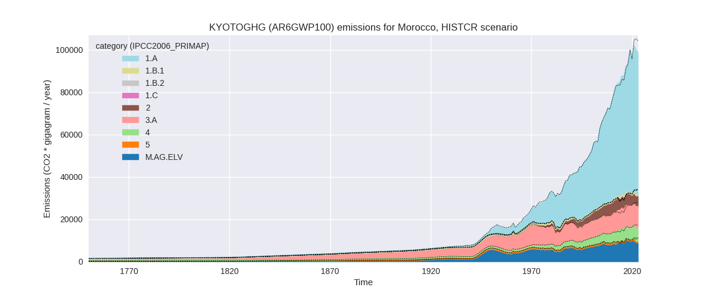
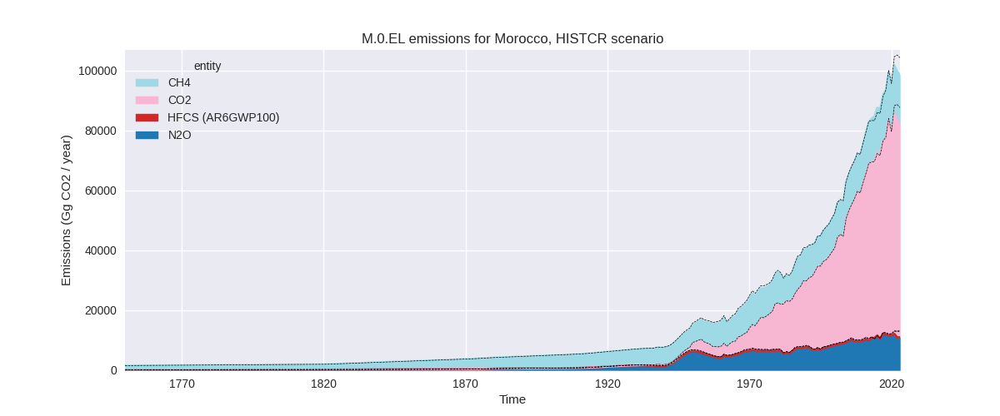
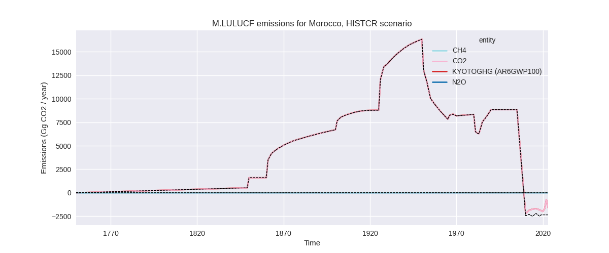
The following figures show the aggregate national total emissions excluding LULUCF AR6GWP100 for the third party priority scenario. The dotted linesshow the v2.6_final data.
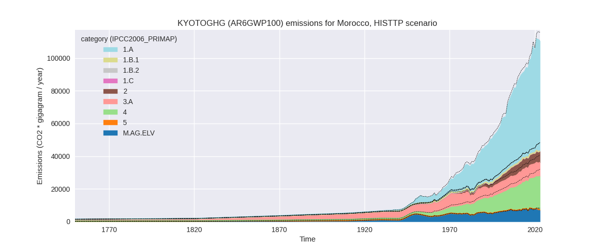
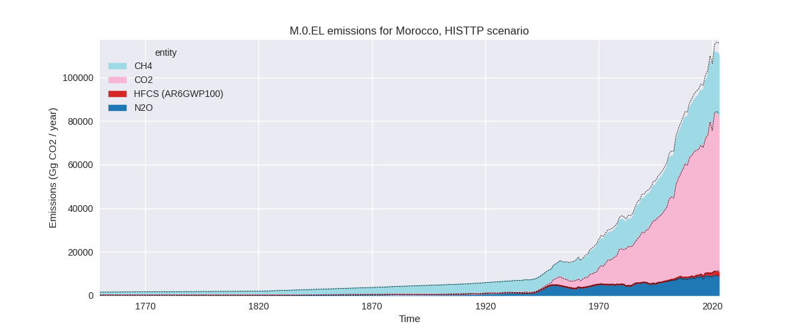
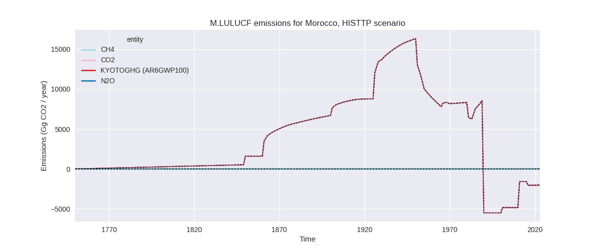
Overview over changes
In the country reported priority scenario we have the following changes for aggregate Kyoto GHG and national total emissions excluding LULUCF (M.0.EL):
- Emissions in 2023 have changed by -5.5%% (-5742.96 Gg CO2 / year)
- Emissions in 1990-2023 have changed by -0.6%% (-439.46 Gg CO2 / year)
In the third party priority scenario we have the following changes for aggregate Kyoto GHG and national total emissions excluding LULUCF (M.0.EL):
- Emissions in 2023 have changed by -4.6%% (-5278.46 Gg CO2 / year)
- Emissions in 1990-2023 have changed by -3.4%% (-2703.20 Gg CO2 / year)
Most important changes per scenario and time frame
In the country reported priority scenario the following sector-gas combinations have the highest absolute impact on national total KyotoGHG (AR6GWP100) emissions in 2023 (top 5):
- 1: 1.A, CO2 with -2700.04 Gg CO2 / year (-3.9%)
- 2: M.AG.ELV, N2O with -2178.78 Gg CO2 / year (-20.2%)
- 3: 3.A, CH4 with -513.53 Gg CO2 / year (-5.1%)
- 4: 2, CO2 with -420.43 Gg CO2 / year (-7.6%)
- 5: 4, N2O with 352.27 Gg CO2 / year (81.6%)
In the country reported priority scenario the following sector-gas combinations have the highest absolute impact on national total KyotoGHG (AR6GWP100) emissions in 1990-2023 (top 5):
- 1: M.AG.ELV, N2O with -745.63 Gg CO2 / year (-8.8%)
- 2: 4, N2O with 304.38 Gg CO2 / year (91.7%)
- 3: 1.A, CO2 with -245.11 Gg CO2 / year (-0.6%)
- 4: 4, CH4 with 157.25 Gg CO2 / year (4.1%)
- 5: 2, CO2 with 94.43 Gg CO2 / year (2.0%)
In the third party priority scenario the following sector-gas combinations have the highest absolute impact on national total KyotoGHG (AR6GWP100) emissions in 2023 (top 5):
- 1: 4, CH4 with -3374.28 Gg CO2 / year (-14.7%)
- 2: 2, CO2 with -691.02 Gg CO2 / year (-13.1%)
- 3: M.AG.ELV, N2O with -534.15 Gg CO2 / year (-7.4%)
- 4: M.AG.ELV, CO2 with -450.53 Gg CO2 / year (-73.0%)
- 5: 3.A, CH4 with -143.40 Gg CO2 / year (-1.7%)
In the third party priority scenario the following sector-gas combinations have the highest absolute impact on national total KyotoGHG (AR6GWP100) emissions in 1990-2023 (top 5):
- 1: 4, CH4 with -2775.69 Gg CO2 / year (-17.5%)
- 2: 3.A, CH4 with 155.39 Gg CO2 / year (2.2%)
- 3: M.AG.ELV, CO2 with -36.49 Gg CO2 / year (-8.3%)
- 4: 2, CO2 with -33.41 Gg CO2 / year (-0.7%)
- 5: 1.B.2, CH4 with -15.39 Gg CO2 / year (-15.7%)
Notes on data changes
Here we list notes explaining important emissions changes for the country.
- CRT data from BTR1 covering 2010, 2012, 2014, 2016, 2018, 2020-2022 has been included and replaces and extends BUR3 data. The additional data points as well as recalculation for old data points have changed emissions for many sectors and gases. HFC emissions are much lower because country reported emissions are available for the first time and are lower than third party data (EDGAR).
- Changes in the TP time-series come from updated EDGAR and FAO with the main change coming from the waste sector.
Changes by sector and gas
For each scenario and time frame the changes are displayed for all individual sectors and all individual gases. In the sector plot we use aggregate Kyoto GHGs in AR6GWP100. In the gas plot we usenational total emissions without LULUCF.
country reported scenario
2023
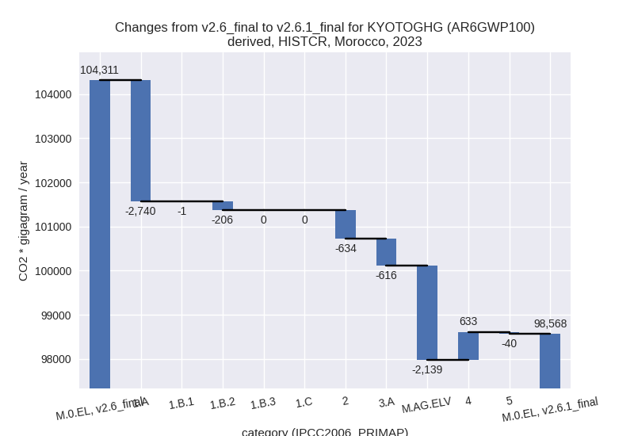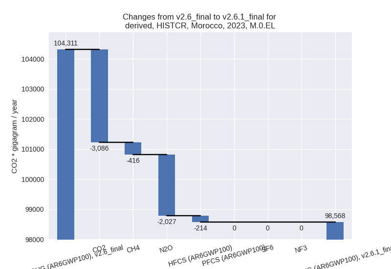
1990-2023
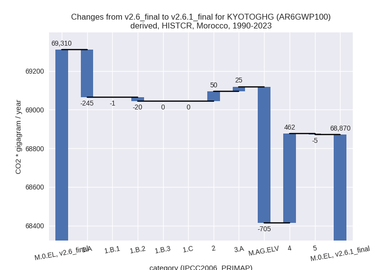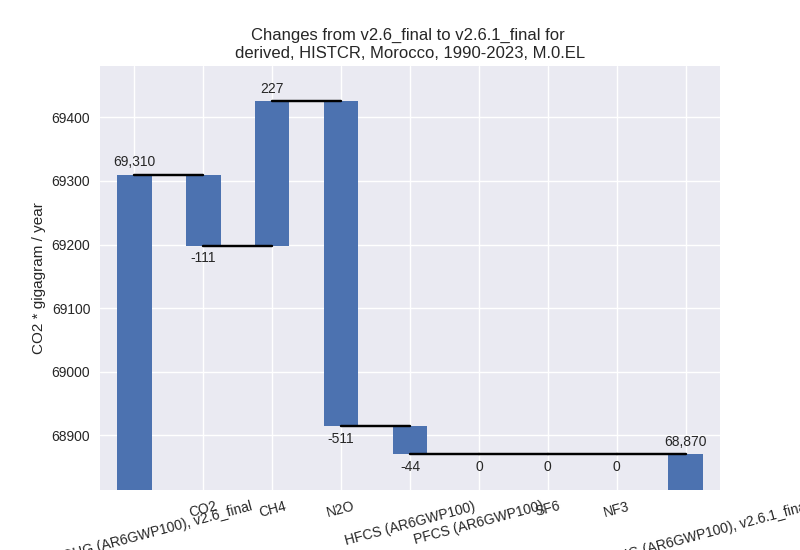
third party scenario
2023
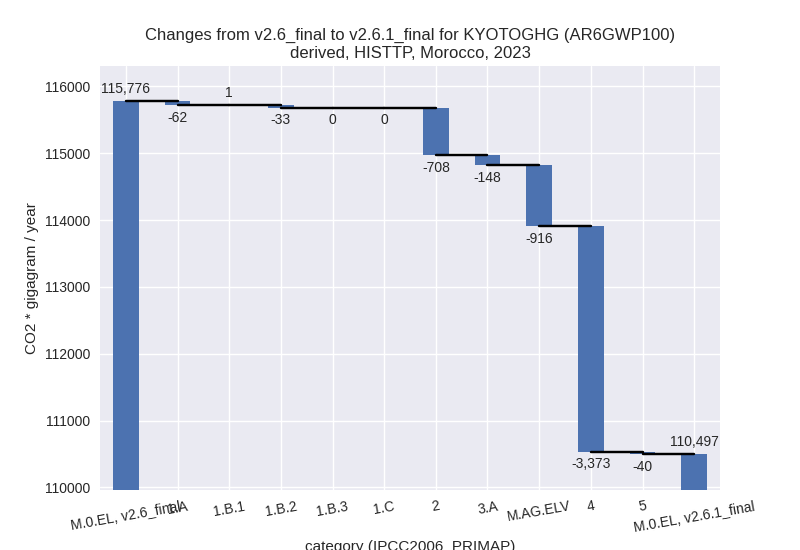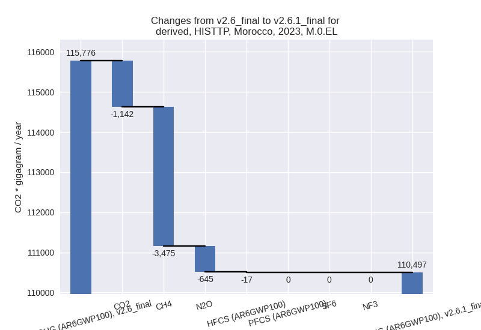
1990-2023
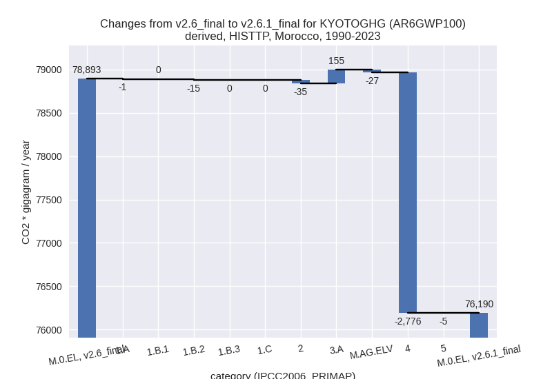
Detailed changes for the scenarios:
country reported scenario (HISTCR):
Most important changes per time frame
For 2023 the following sector-gas combinations have the highest absolute impact on national total KyotoGHG (AR6GWP100) emissions in 2023 (top 5):
- 1: 1.A, CO2 with -2700.04 Gg CO2 / year (-3.9%)
- 2: M.AG.ELV, N2O with -2178.78 Gg CO2 / year (-20.2%)
- 3: 3.A, CH4 with -513.53 Gg CO2 / year (-5.1%)
- 4: 2, CO2 with -420.43 Gg CO2 / year (-7.6%)
- 5: 4, N2O with 352.27 Gg CO2 / year (81.6%)
For 1990-2023 the following sector-gas combinations have the highest absolute impact on national total KyotoGHG (AR6GWP100) emissions in 1990-2023 (top 5):
- 1: M.AG.ELV, N2O with -745.63 Gg CO2 / year (-8.8%)
- 2: 4, N2O with 304.38 Gg CO2 / year (91.7%)
- 3: 1.A, CO2 with -245.11 Gg CO2 / year (-0.6%)
- 4: 4, CH4 with 157.25 Gg CO2 / year (4.1%)
- 5: 2, CO2 with 94.43 Gg CO2 / year (2.0%)
Changes in the main sectors for aggregate KyotoGHG (AR6GWP100) are
- 1: Total sectoral emissions in 2022 are 68542.14 Gg
CO2 / year which is 68.7% of M.0.EL emissions. 2023 Emissions have
changed by -4.2% (-2946.92 Gg CO2 /
year). 1990-2023 Emissions have changed by -0.6% (-265.89 Gg CO2 / year). For 2023
the changes per gas
are:
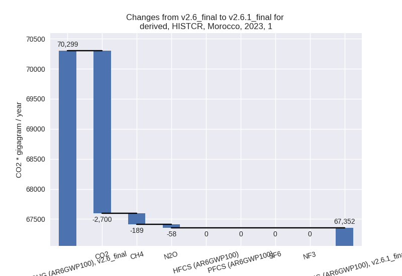
The changes come from the following subsectors:- 1.A: Total sectoral emissions in 2022 are 68503.36
Gg CO2 / year which is 99.9% of category 1 emissions. 2023 Emissions
have changed by -3.9% (-2739.53 Gg
CO2 / year). 1990-2023 Emissions have changed by -0.6% (-244.65 Gg CO2 / year). For 2023
the changes per gas
are:

There is no subsector information available in PRIMAP-hist. - 1.B.1: Total sectoral emissions in 2022 are 8.38 Gg
CO2 / year which is 0.0% of category 1 emissions. 2023 Emissions have
changed by -13.5% (-1.31 Gg CO2 /
year). 1990-2023 Emissions have changed by -5.9% (-1.42 Gg CO2 / year). For 2023 the
changes per gas
are:
For 1990-2023 the changes per gas are:
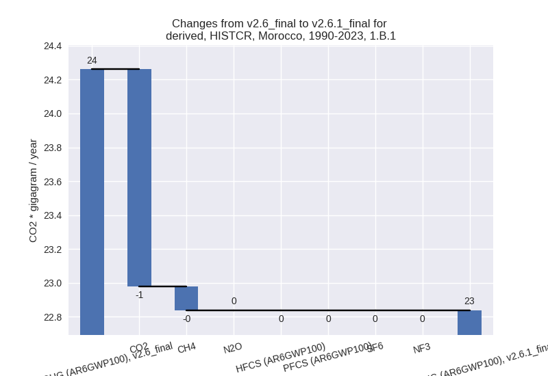
There is no subsector information available in PRIMAP-hist. - 1.B.2: Total sectoral emissions in 2022 are 30.41
Gg CO2 / year which is 0.0% of category 1 emissions. 2023 Emissions have
changed by -87.2% (-206.08 Gg CO2 /
year). 1990-2023 Emissions have changed by -12.6% (-19.82 Gg CO2 / year). For 2023
the changes per gas
are:
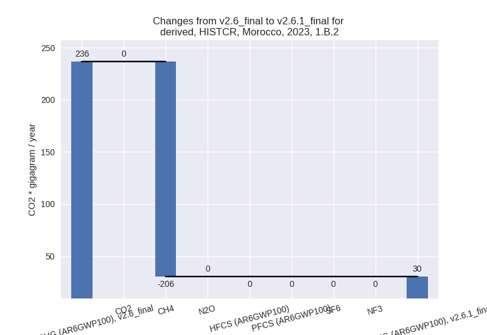
For 1990-2023 the changes per gas are:
There is no subsector information available in PRIMAP-hist.
- 1.A: Total sectoral emissions in 2022 are 68503.36
Gg CO2 / year which is 99.9% of category 1 emissions. 2023 Emissions
have changed by -3.9% (-2739.53 Gg
CO2 / year). 1990-2023 Emissions have changed by -0.6% (-244.65 Gg CO2 / year). For 2023
the changes per gas
are:
- 2: Total sectoral emissions in 2022 are 5446.09 Gg
CO2 / year which is 5.5% of M.0.EL emissions. 2023 Emissions have
changed by -10.9% (-634.29 Gg CO2 /
year). 1990-2023 Emissions have changed by 1.1% (50.07 Gg CO2 / year). For 2023 the
changes per gas
are:
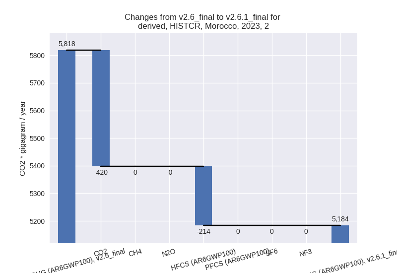 - M.AG: Total sectoral emissions in 2022 are 18740.16
Gg CO2 / year which is 18.8% of M.0.EL emissions. 2023 Emissions have
changed by -12.8% (-2755.18 Gg CO2 /
year). 1990-2023 Emissions have changed by -4.0% (-680.49 Gg CO2 / year). For 2023
the changes per gas
are:
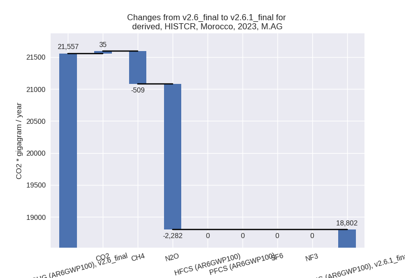
For 1990-2023 the changes per gas are:
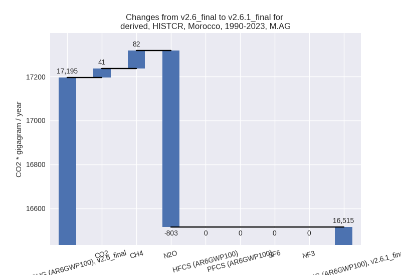
The changes come from the following subsectors:- 3.A: Total sectoral emissions in 2022 are 10067.89
Gg CO2 / year which is 53.7% of category M.AG emissions. 2023 Emissions
have changed by -5.8% (-616.27 Gg
CO2 / year). 1990-2023 Emissions have changed by 0.3% (24.57 Gg CO2 / year). For 2023 the
changes per gas
are:
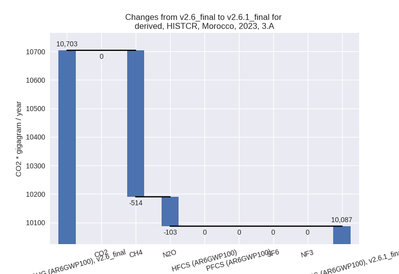
There is no subsector information available in PRIMAP-hist. - M.AG.ELV: Total sectoral emissions in 2022 are
8672.28 Gg CO2 / year which is 46.3% of category M.AG emissions. 2023
Emissions have changed by -19.7%
(-2138.91 Gg CO2 / year). 1990-2023 Emissions have changed by -8.3% (-705.06 Gg CO2 / year). For 2023
the changes per gas
are:
For 1990-2023 the changes per gas are:
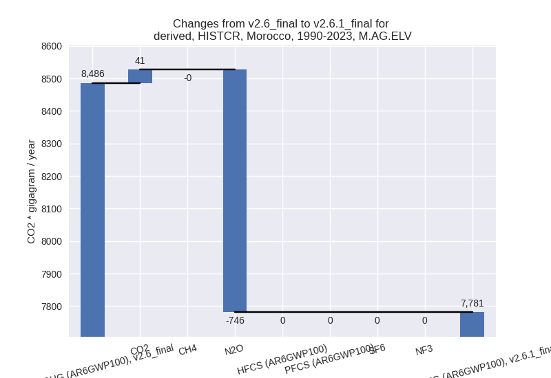
There is no subsector information available in PRIMAP-hist.
- 3.A: Total sectoral emissions in 2022 are 10067.89
Gg CO2 / year which is 53.7% of category M.AG emissions. 2023 Emissions
have changed by -5.8% (-616.27 Gg
CO2 / year). 1990-2023 Emissions have changed by 0.3% (24.57 Gg CO2 / year). For 2023 the
changes per gas
are:
- 4: Total sectoral emissions in 2022 are 6673.99 Gg
CO2 / year which is 6.7% of M.0.EL emissions. 2023 Emissions have
changed by 10.3% (633.44 Gg CO2 /
year). 1990-2023 Emissions have changed by 11.1% (461.63 Gg CO2 / year). For 2023 the
changes per gas
are:
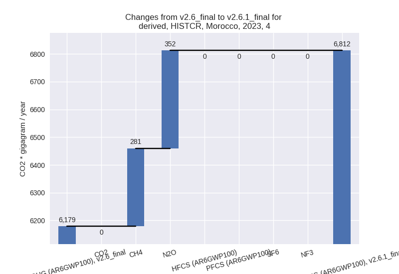
For 1990-2023 the changes per gas are:
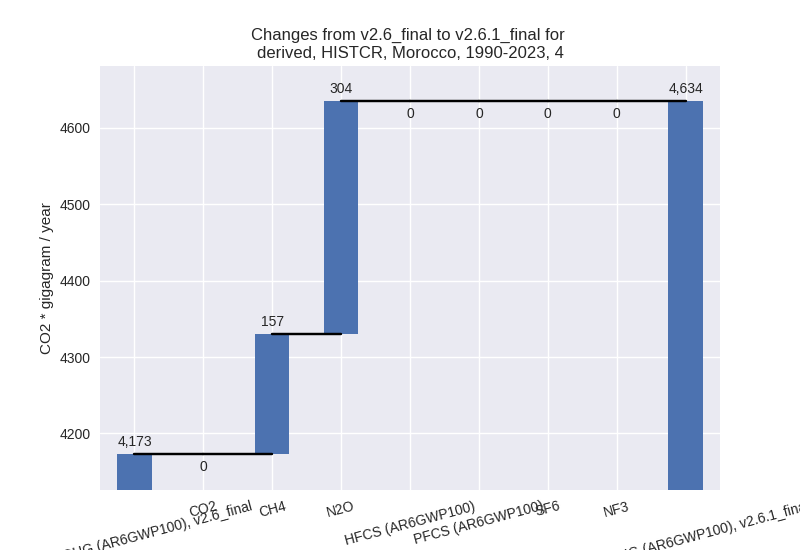 - 5: Total sectoral emissions in 2022 are 427.95 Gg
CO2 / year which is 0.4% of M.0.EL emissions. 2023 Emissions have
changed by -8.7% (-40.00 Gg CO2 /
year). 1990-2023 Emissions have changed by -1.7% (-4.77 Gg CO2 / year). For 2023 the
changes per gas
are:
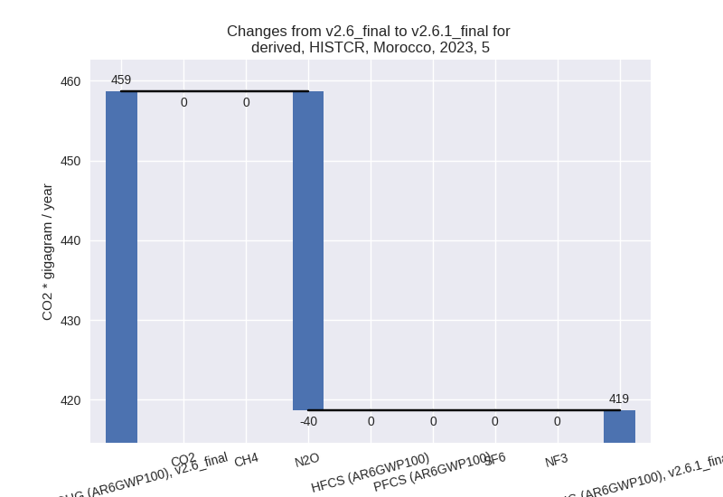
third party scenario (HISTTP):
Most important changes per time frame
For 2023 the following sector-gas combinations have the highest absolute impact on national total KyotoGHG (AR6GWP100) emissions in 2023 (top 5):
- 1: 4, CH4 with -3374.28 Gg CO2 / year (-14.7%)
- 2: 2, CO2 with -691.02 Gg CO2 / year (-13.1%)
- 3: M.AG.ELV, N2O with -534.15 Gg CO2 / year (-7.4%)
- 4: M.AG.ELV, CO2 with -450.53 Gg CO2 / year (-73.0%)
- 5: 3.A, CH4 with -143.40 Gg CO2 / year (-1.7%)
For 1990-2023 the following sector-gas combinations have the highest absolute impact on national total KyotoGHG (AR6GWP100) emissions in 1990-2023 (top 5):
- 1: 4, CH4 with -2775.69 Gg CO2 / year (-17.5%)
- 2: 3.A, CH4 with 155.39 Gg CO2 / year (2.2%)
- 3: M.AG.ELV, CO2 with -36.49 Gg CO2 / year (-8.3%)
- 4: 2, CO2 with -33.41 Gg CO2 / year (-0.7%)
- 5: 1.B.2, CH4 with -15.39 Gg CO2 / year (-15.7%)
Changes in the main sectors for aggregate KyotoGHG (AR6GWP100) are
- 1: Total sectoral emissions in 2022 are 68611.55 Gg CO2 / year which is 61.7% of M.0.EL emissions. 2023 Emissions have changed by -0.1% (-93.46 Gg CO2 / year). 1990-2023 Emissions have changed by -0.0% (-16.55 Gg CO2 / year).
- 2: Total sectoral emissions in 2022 are 6953.13 Gg
CO2 / year which is 6.2% of M.0.EL emissions. 2023 Emissions have
changed by -9.3% (-707.72 Gg CO2 /
year). 1990-2023 Emissions have changed by -0.7% (-34.59 Gg CO2 / year). For 2023 the
changes per gas
are:
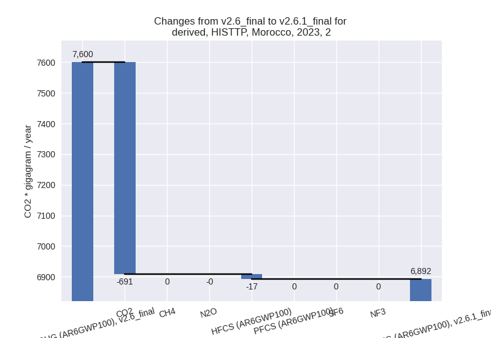 - M.AG: Total sectoral emissions in 2022 are 15437.53
Gg CO2 / year which is 13.9% of M.0.EL emissions. 2023 Emissions have
changed by -6.4% (-1064.03 Gg CO2 /
year). 1990-2023 Emissions have changed by 0.9% (128.37 Gg CO2 / year). For 2023 the
changes per gas
are:
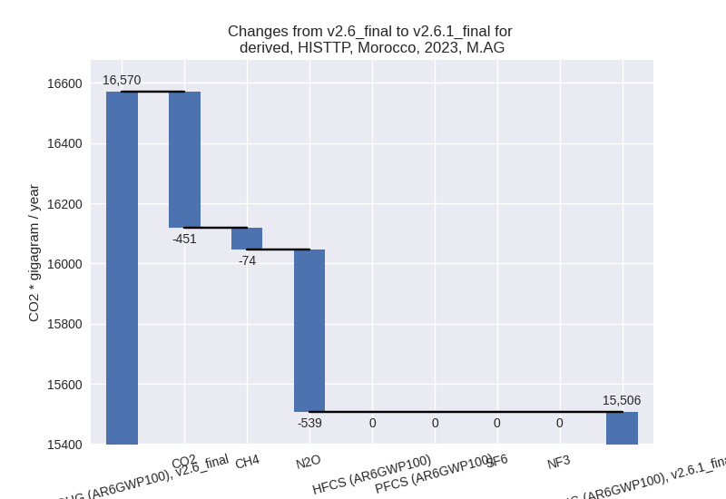
The changes come from the following subsectors:- 3.A: Total sectoral emissions in 2022 are 8451.90
Gg CO2 / year which is 54.7% of category M.AG emissions. 2023 Emissions
have changed by -1.7% (-148.42 Gg
CO2 / year). 1990-2023 Emissions have changed by 2.1% (155.13 Gg CO2 / year). For 1990-2023
the changes per gas
are:
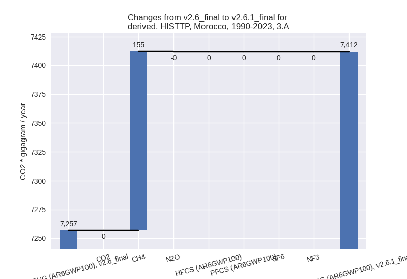
There is no subsector information available in PRIMAP-hist. - M.AG.ELV: Total sectoral emissions in 2022 are
6985.63 Gg CO2 / year which is 45.3% of category M.AG emissions. 2023
Emissions have changed by -11.5%
(-915.61 Gg CO2 / year). 1990-2023 Emissions have changed by -0.4% (-26.77 Gg CO2 / year). For 2023 the
changes per gas
are:
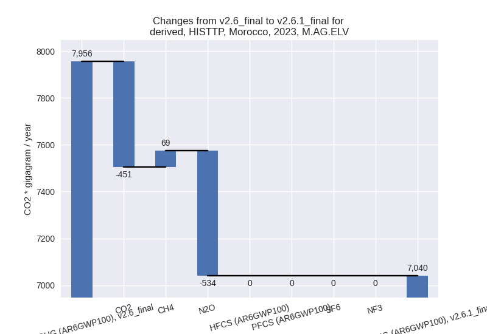
There is no subsector information available in PRIMAP-hist.
- 3.A: Total sectoral emissions in 2022 are 8451.90
Gg CO2 / year which is 54.7% of category M.AG emissions. 2023 Emissions
have changed by -1.7% (-148.42 Gg
CO2 / year). 1990-2023 Emissions have changed by 2.1% (155.13 Gg CO2 / year). For 1990-2023
the changes per gas
are:
- 4: Total sectoral emissions in 2022 are 19831.75 Gg
CO2 / year which is 17.8% of M.0.EL emissions. 2023 Emissions have
changed by -14.3% (-3373.25 Gg CO2 /
year). 1990-2023 Emissions have changed by -17.0% (-2775.66 Gg CO2 / year). For 2023
the changes per gas
are:
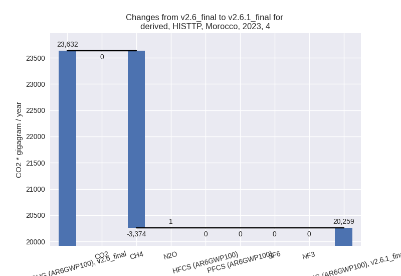
For 1990-2023 the changes per gas are: - 5: Total sectoral emissions in 2022 are 427.95 Gg
CO2 / year which is 0.4% of M.0.EL emissions. 2023 Emissions have
changed by -8.7% (-40.00 Gg CO2 /
year). 1990-2023 Emissions have changed by -1.7% (-4.77 Gg CO2 / year). For 2023 the
changes per gas
are: